Kept from round 1
AStudio Slate
Open AThe closest to A24's own site. Near-black, off-white type, and the work laid out as a catalog. Hover, tab or scroll through the project titles and the big still behind them changes.
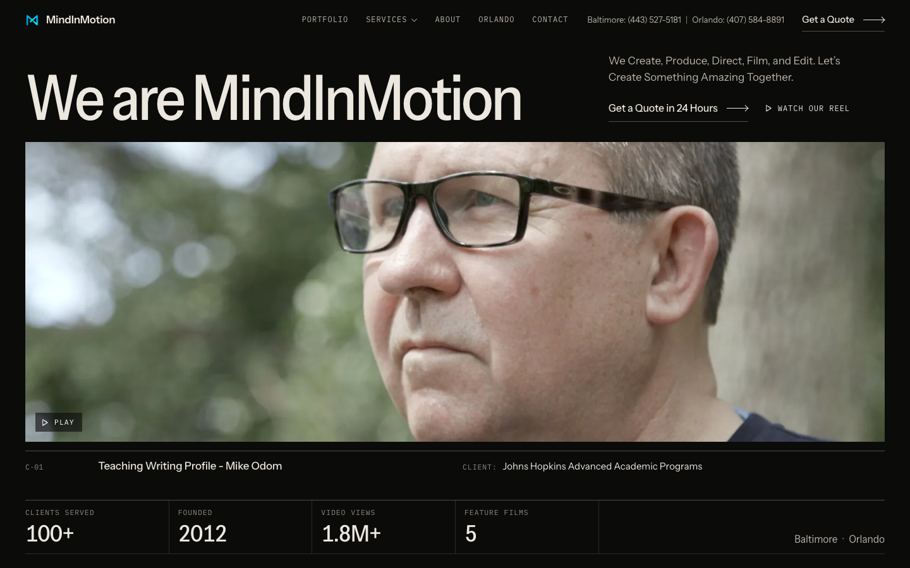
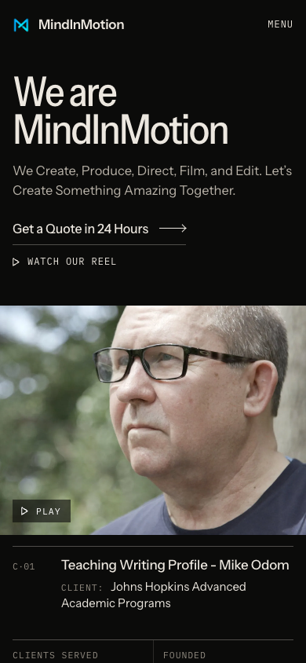
BProduction House
Open BBuilt like a commercial production company's site. One full-bleed frame with the phone numbers pinned to its corners, then each project as a heavy credit line over a big still that pulls into focus as you scroll.
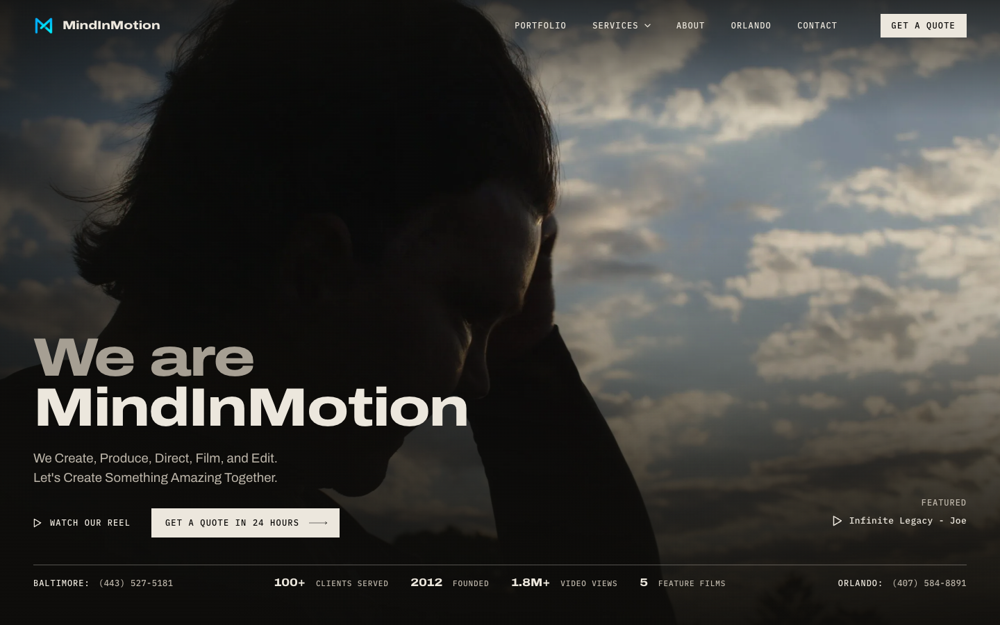
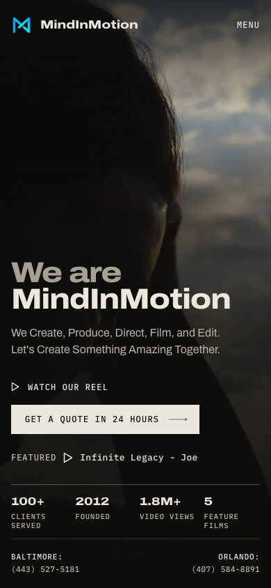
DTitle Sequence
Open DPicked. The homepage plays like a film's opening titles. Client stories run as pinned full-width scenes between letterbox bars, scene numbers mark the sections, and a live time-of-day timecode runs in the header. The screenshots and videos show it as of October 7, with the new copy and typeface A.
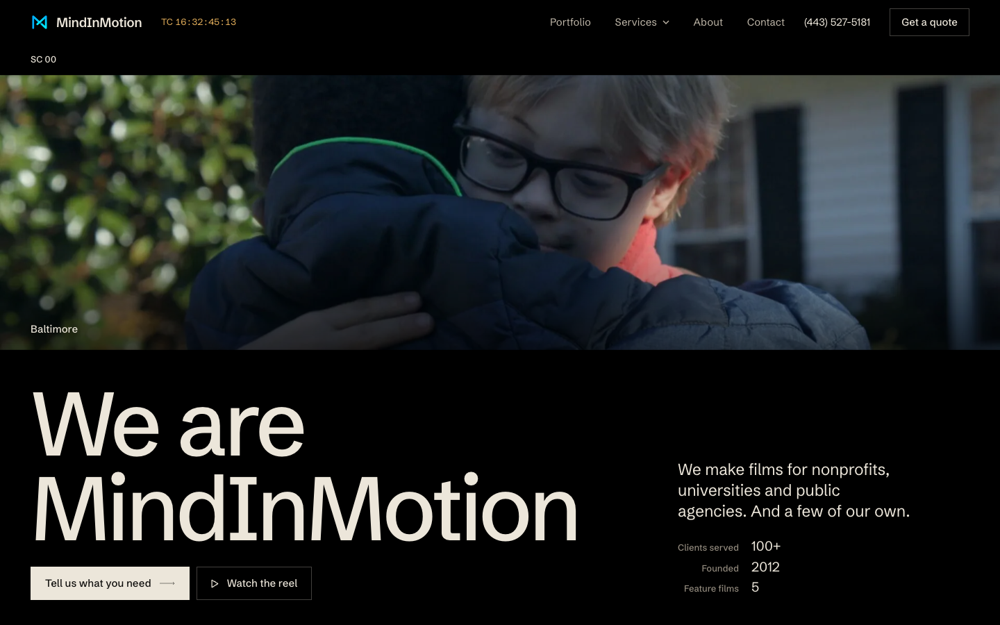
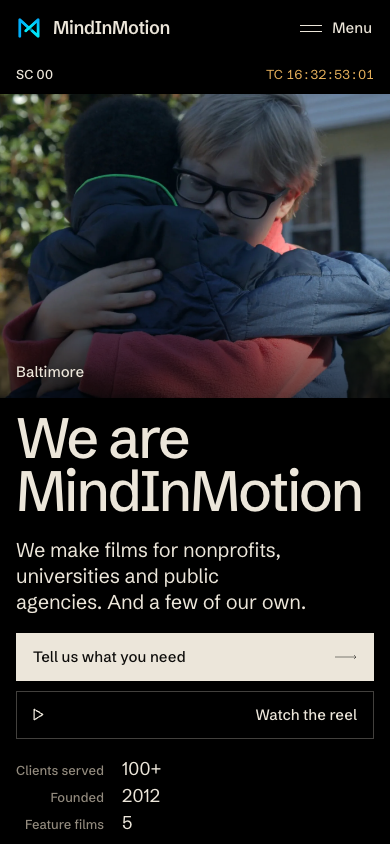
New: immersive
FPull Back
Open FEvery finished frame sits on a real monitor on your real set. The page opens inside the MSDE couch shot and backs out onto the SmallHD in the set photo, then out to the crew, then into the edit suite. Along the way, "We Create, Produce, Direct, Film" lands beside the people doing each job. The frame ends up as the first Featured Projects tile. Click a monitor and the camera pushes back in.
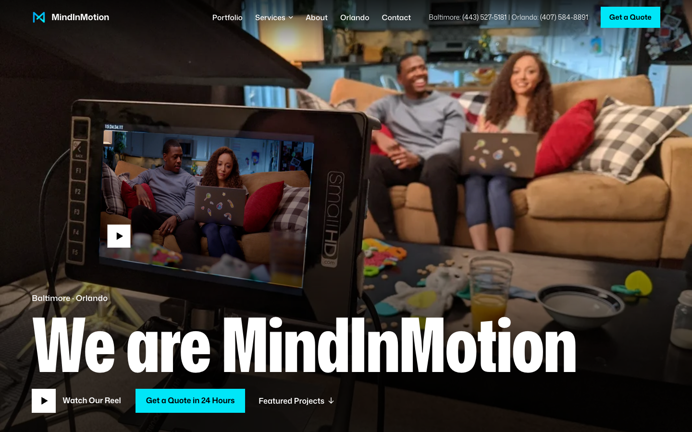
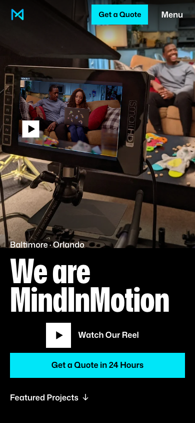
GBlocking
Open GEvery heading is blocked into a real frame like an actor, standing behind the people and in front of the room. The Cuba hiker's hat breaks into MINDINMOTION, a boom pole cuts through "Behind the Scenes", and the woman in the library looks up at "Full-Service Production". Scrolling pushes the camera in, and the room, the words and the person each move at their own depth.
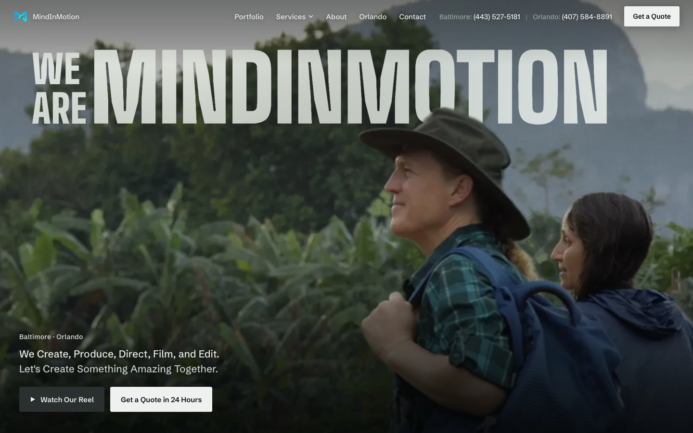
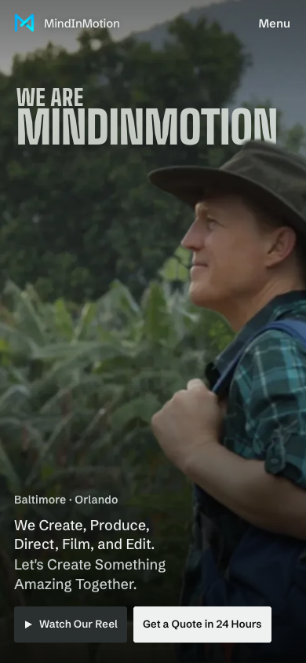
HThrow
Open HA dark room with a projector behind you. Your stills are thrown on the far wall, and every headline hangs in the beam and casts a shadow that swings as you move the mouse. Each of the five verbs lights up only when the wall cuts to the WellPoint crew doing that job.
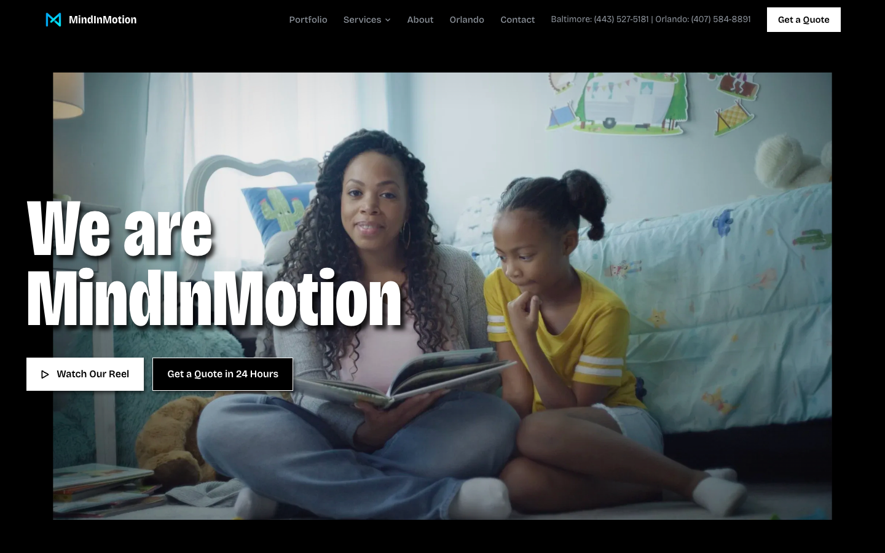
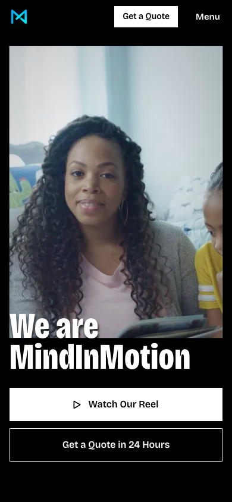
What would make them better
- A silent loop cut from client work only. The loop behind the current homepage comes from the reel, which includes horror shots. Every concept shows a still for now. Thirty to sixty seconds of client footage would let B, F and H move on arrival.
- Bigger exports of a few frames. Cuba (child on horse), Moms at the Playground, Pearlstone, the stage Q&A and the black-and-white crew hike exist only at 1200px or smaller. The Checklist Moments thumbnail is 640px. 2400px exports from the masters would let them run full screen.
- More behind-the-scenes photos that show a finished shot on a monitor. F is built on four real set-and-monitor pairs. You probably have more on your drives, and each one adds another pull-back.
- A check in your normal browser and on an iPhone. Vimeo blocks my test browsers, so video playback is unconfirmed. F, G and H are the heaviest pages and haven't been tested in Safari yet.